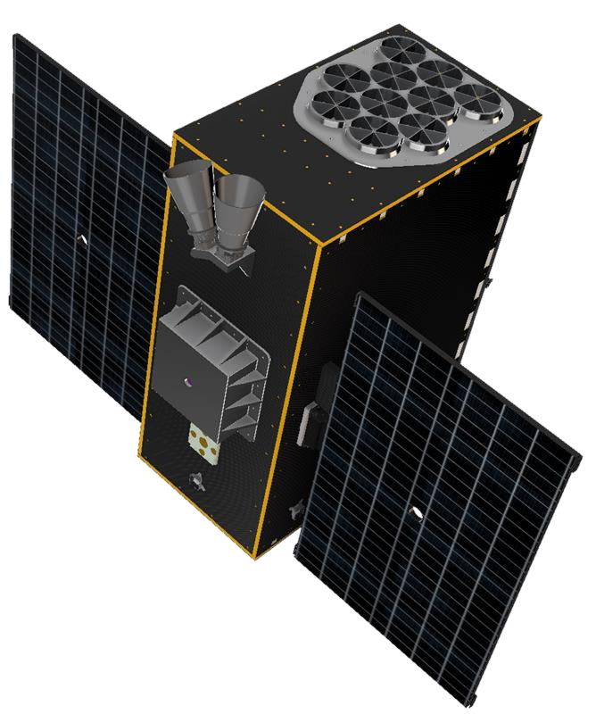

NEBULA – Xplorer
NEBULA – Xplorer stands for “Netherlands Educational Satellite for Exploration of Binary-Linked Astrophysics – X-ray Observer”. About 400 students will join SRON, 14 Dutch educational institutions and many industrial partners in developing this space mission from start to finish, led by scientists and engineers.
Our mission
The mission has two goals. The scientific goal is to better understand how a black hole captures material from a companion star. The educational goal is for students from Dutch educational institutions to experience first hand how to build a space mission from the ground up. SRON is leading the NEBULA – Xplorer mission, contributing to a new generation of scientists, designers and technicians for Dutch space research.
Core Values
- Collaboration: We achieve more together as a team
- Inclusion: We respect each other and embrace our differences
- Diversity: We seek out a variety in perspective, experiences, and background
- Ambition: We strive for the best, in ourselves and in our mission
- Resilience: We embrace our problems as learning opportunities
- Curiosity: We desire to explore, question, and understand the unknown
The science
Many of the brightest objects in the Universe are X-ray binaries. These are combinations of an extremely compact object, such as a black hole or neutron star, and a companion star. Over time, the compact object extracts matter from its companion star. This releases lots of energy through a jet. Scientists do not yet fully understand this process. Especially the nature of the stream of matter right next to the black hole remains a big mystery.
Observation
NEBULA-Xplorer will investigate how jets form and how X-ray binaries evolve. It will observe these objects for long periods of time to see how their emission varies on time scales from milliseconds to weeks. This long observation time makes it possible to combine X-ray activity with data from other wavelengths from other telescopes.
Our mission
The mission has two goals. The scientific goal is to better understand how a black hole captures material from a companion star. The educational goal is for students from Dutch educational institutions to experience first hand how to build a space mission from the ground up. SRON is leading the NEBULA – Xplorer mission, contributing to a new generation of scientists, designers and technicians for Dutch space research.
